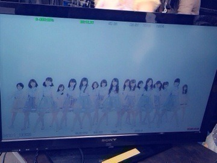

| 2014/03 11 Tue | 無限の疾走。554回目 |
東日本大震災が3年。
一日一日を無駄にしない
一瞬一瞬を大切に
心に留めます。
全国握手会にて
チャリティー募金箱を設けます。
御協力よろしくお願いします。
被災された方々へ
少しでも早い復興を願います。
御冥福をお祈りします。
8thのアンダー曲
生まれたままで
昨日、ゆったんのおに魂にて解禁
そしてMVも解禁されました。

ジャケットも公開されました！
Type-Cがアンダー盤として
発売されます。
アンダーメンバーが
ジャケットになるのは初めてのこと。
テーマは「泣き笑い」。
自然とぼろぼろ泣けてきました。
自分の表情に可愛さとか
何もないかもしれないけど、
どうして泣いてるのか
どういう状況なのか
自由に想像してください。
ジャケ写みんなで飾れて嬉しい。
いちばんお気に入りです！
そして、Type-A〜Cについてくる
「全国握手会参加券兼
スペシャルプレゼント応募券」。
このスペシャルプレゼントがなんと
アンダースペシャルライブなのです！
今まで地方イベントなどで
アンダーだけが出演することは
何度かありましたが、
今回はれっきとした
アンダーのイベントです。
楽しみで仕方ないよ〜
こうして新しいことをやっていく中
アンダー曲のセンターを
務めさせていただくことになりました。
2nd狼に口笛を以来になります。
あの時は何もわからないまま
ポジションに立っていましたが、
あれから1年半以上経ちました。
今となってはこのポジションへの
考え方も変わりました。
ただの贅沢かもしれないけど、
ずっとリベンジしたいと思ってました。
発表された時は喜びよりも、
何か大きなものを
任せられてる気がする
変わらなきゃ
という使命感の方が大きかったです。
生まれたままで はとても前向きな曲。
こんな素敵な曲与えられたんだから
もうがむしゃらに走るしかない。
MVも今まで以上に気合を入れて
撮影に臨みました！
走ったり飛んだり跳ねたり
座りながら踊ったり
寝転んで踊ったり見所満載。
とにかく楽しかった〜
感想待ってます♪
今回、CDの1つが
アンダー盤として出たり、
アンダーだけのライブも始まるなど
初めてのことがたくさんある分、
大きな責任と使命があります。
この曲のセンターが
万理華でよかったと思ってもらいたい。
たくさんの方に私たちのことを
知ってほしい。
私たちアンダーメンバーが
ひとつのチームとして成長すること、
強くなることで乃木坂46は
もっと大きくなると思うんです。

二期生からまいちゅんが昇格し、
17人となった新生アンダーメンバーに
期待していてください！
最強のメンバーだ！
っていうのを証明してみせます。
まりか
コメント(759)
2014/03/11 10:00